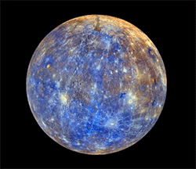
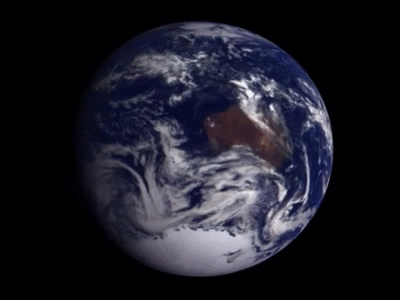
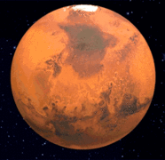
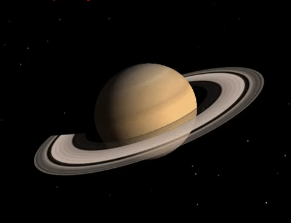
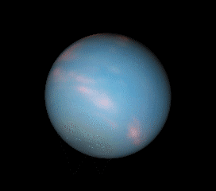
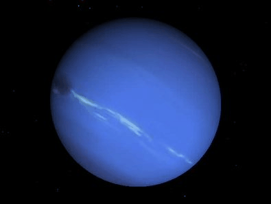

- Mercurio
- Salelites: 0
- Orbita Limpa: true
- Atmosfera:42% de oxigênio",29% de gás de sódio, 22% de hidrogênio,6% de hélio, 0,5% de potássio

- Terra
- Salelites: 1
- Orbita Limpa: true
- Atmosfera: 78% de nitrogênio , 21% de oxigênio

- Marte_
- Salelites: 2
- Orbita Limpa: true
- Atmosfera:95,3% de dióxido de carbono, 2,7% de nitrogênio, 1,6% de argônio

- Jupiter
- Salelites: 79
- Orbita Limpa: true
- Atmosfera:75% de hidrogênio,24% de hélio

- Saturno
- Salelites: 82
- Orbita Limpa: true
- Atmosfera:93,2% de hidrogênio,6,7% de hélio

- Urano_
- Salelites: 27
- Orbita Limpa: true
- Atmosfera:83% de hidrogênio,15% de hélio e 2% metano

- Neturno
- Salelites: 14
- Orbita Limpa: true
- Atmosfera:80% de hidrogênio,19% de hélio